Every picture in this project's main galleries is computed in double-precision floating point, the 64-bit number format a processor does arithmetic in natively. This is fast and efficient, but it breaks down when you zoom deeply enough into the Mandelbrot set. Past a certain point, neighboring samples round to the same number and whole groups of pixels compute the same orbit. The result is blocky discretization artifacts that have nothing to do with the fractal, and they get worse the deeper you go.
It's possible, but expensive, to switch to higher-precision arithmetic: 128-bit floats, or arbitrary-precision libraries such as rug in Rust or mpmath in Python. Fortunately, the deep-zoom community has developed clever mathematics that looks much deeper into the Mandelbrot set far more efficiently. I go over it briefly at the end of this page. Deeper frames also need a slower, more deliberate way of browsing, which the Deep tab of the fractal explorer provides.
Here is a video of a deep descent, down to a frame about 3.5 × 10−15 wide.
It was made with
builder/zoom.py,
which computes a high-precision field once at each halving of the width and colors it
separately.
Figure placeholderdeep-zoom-video
Deep frames have wildly varying escape times, and getting a rendering that conveys their full range of detail often takes more exploration and parameter tweaking. The percentile stretch from rendering fundamentals spreads the palette evenly over each frame's own values. At extreme depths escape counts run into the tens of thousands, and the stretch leaves most of the picture inside a few percent of the palette. For deep frames an absolute scale generally works best: the smooth count passes through a logarithm or a power curve, and the palette then repeats at a fixed period. The figure below shows the video's final frame under several such colorings.
Figure placeholderdeep-final-colorings
What depth adds to a picture
With some deliberate choices guiding the descent, deeper parts of the Mandelbrot set and related fractals produce much richer detail and pattern in regions that look plain and smooth at shallower depths. In the original Mandelbrot set, the smooth rendering approach often leaves large areas with only a smooth gradient. For most of the gallery I used alternative rendering modes (especially threads and tia) to add detail to these regions, but it's also possible to find extremely deep areas of these fractals that contain beautiful fractal richness where the shallower levels would be smooth. The figure below compares a shallow frame with a deep frame inside it.
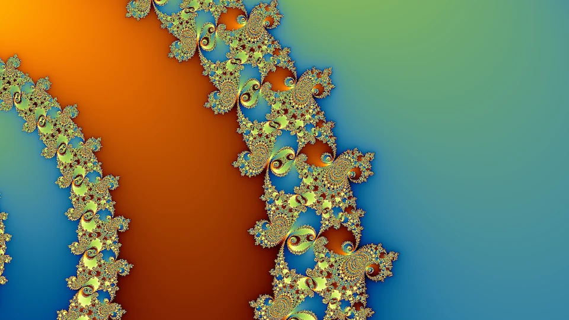
Shallowwidth 10⁻¹²
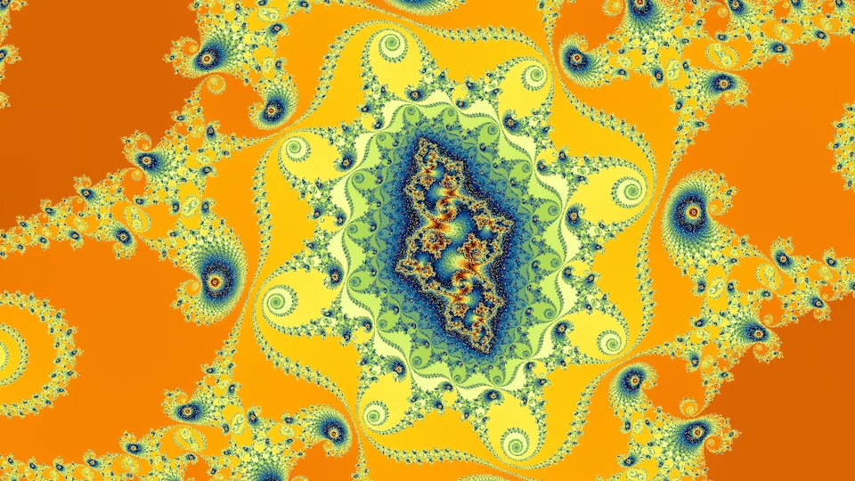
Deepwidth 2.3 × 10⁻¹⁷
Minibrot descents
Small copies of the set, minibrots, lie all along the boundary: every filament passes infinitely many of them, at every depth, smaller and more numerous the further down you go. From outside, a copy looks like a small black body with the familiar bulbs and hairs. A frame that zooms into the copy's neighborhood sees more than that. It finds the copy's own seahorse valleys and spirals laid over the structure it was already in, so a region that looked smooth from further out fills with filigree. Close to a copy, that filigree often arranges into what look like whole Julia sets, the embedded Julia sets that deep-zoom artists steer toward. The figure below follows one descent of this kind, six steps down a chain of components nested one inside the next. Each step frames the next component in the chain, and the last frame is about a billionth of the complex plane wide.
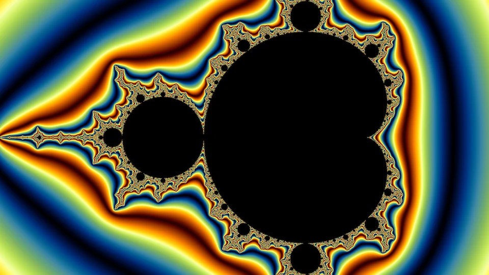
Whole setwidth 3
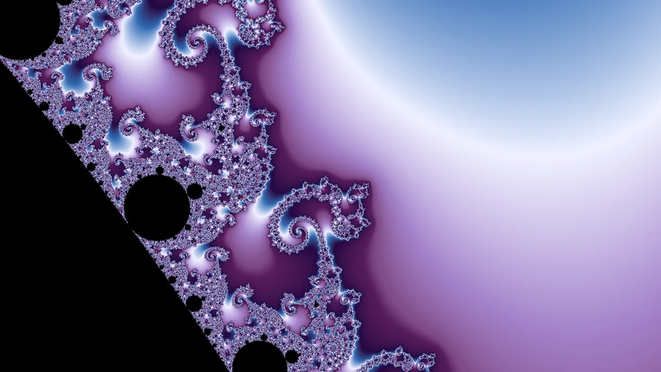
Seahorse valleywidth 0.05
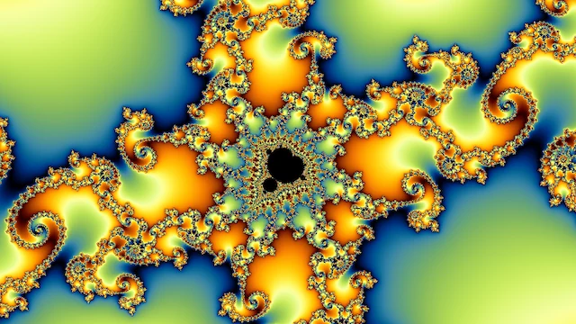
Period 27width 1.9 × 10⁻⁵
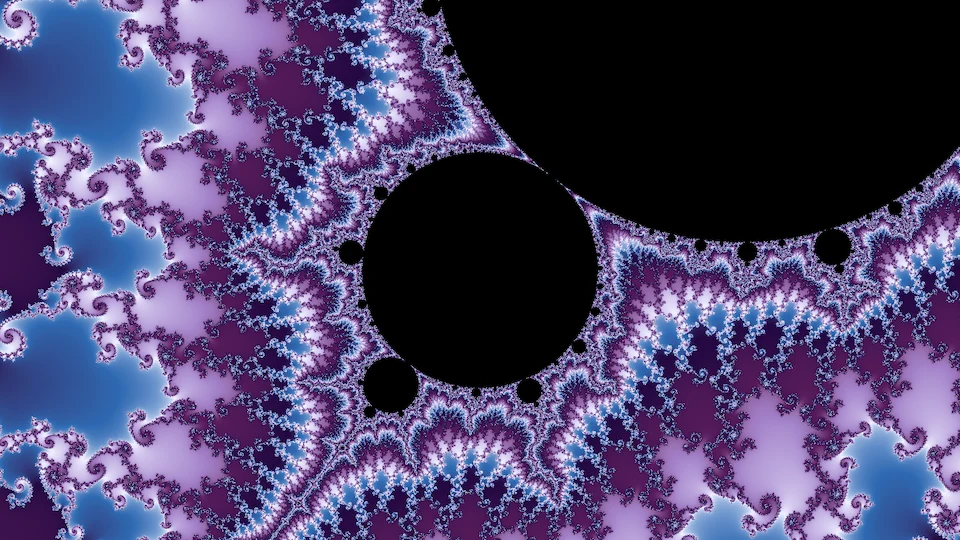
Period 54width 2 × 10⁻⁶
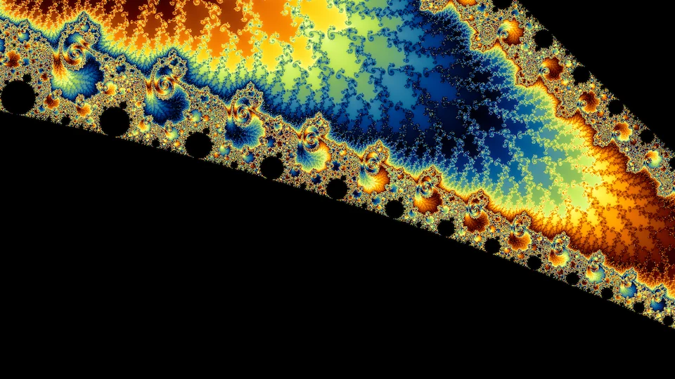
Period 972width 5 × 10⁻⁸
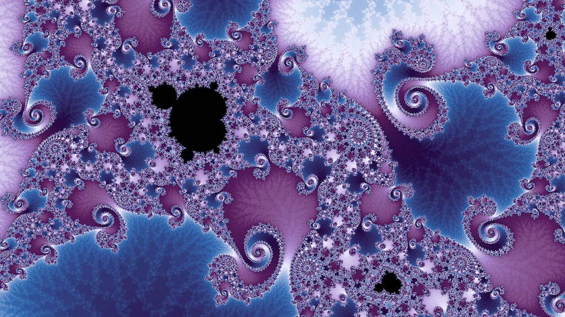
Last stepwidth 1.3 × 10⁻⁹
Julia sets inside the Mandelbrot set
Every parameter of the Mandelbrot set has its own Julia set, the starting points whose orbits stay bounded under that parameter's map. Is it worth zooming deep into a Julia set? Mostly not. The map carries a small piece of its Julia set onto a larger piece of the same set, so a Julia set repeats itself at every scale, and a deep zoom mostly finds shapes it has already shown. The Mandelbrot set is different, because each of its points is a different parameter, so a deeper frame keeps meeting new Julia sets.
The two meet at the Misiurewicz points, parameters where the orbit of zero never returns to zero but eventually lands on a repeating cycle. Tan Lei proved in 1990 that at such a point the Mandelbrot set and the Julia set for that parameter, zoomed in at the same point, become identical in the limit, up to a fixed scale and rotation: the deeper the zoom, the closer the match. The figure below shows one shallow example on the Mandelbrot set and two deep ones on the multibrots, where the same match holds. At depth the filigree agrees almost line for line. The one difference is that the parameter plane also holds tiny copies of the set, which the Julia set does not.
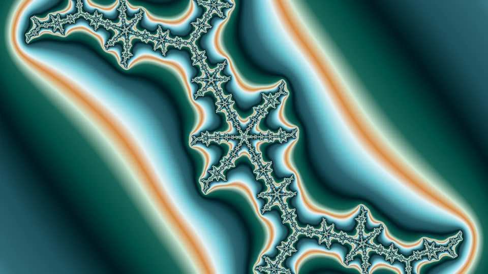
Julia setc = −0.1011 + 0.9563i
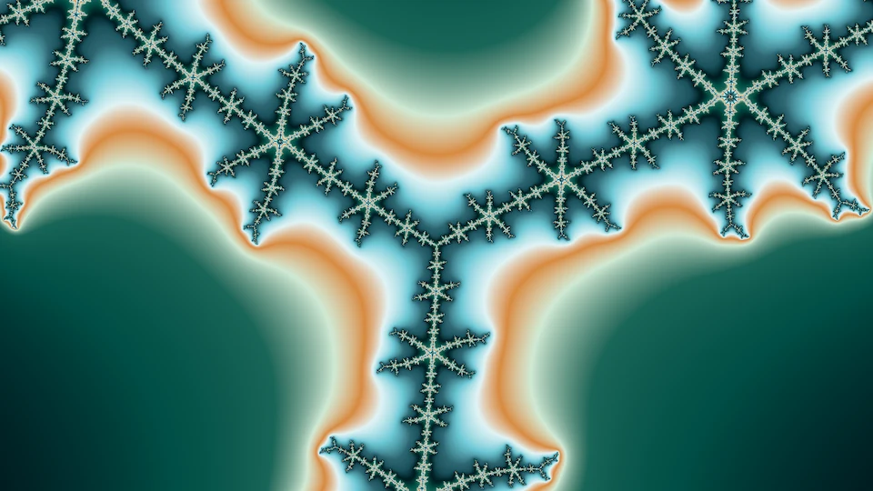
Parameter planewidth 3 × 10⁻³
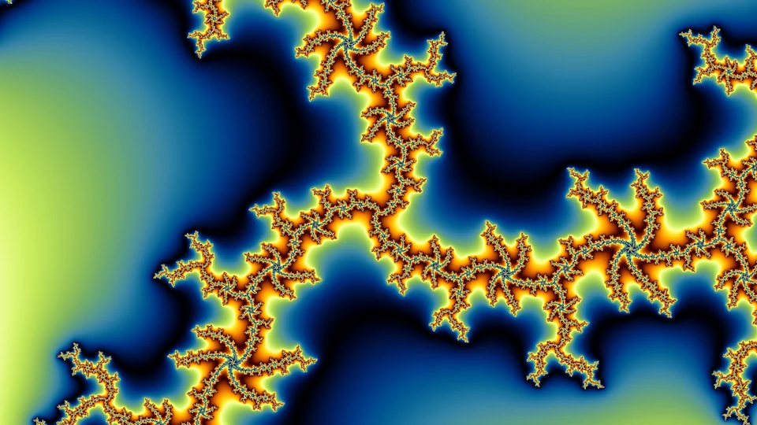
Julia setc = −0.6352 + 0.6452i, degree 3
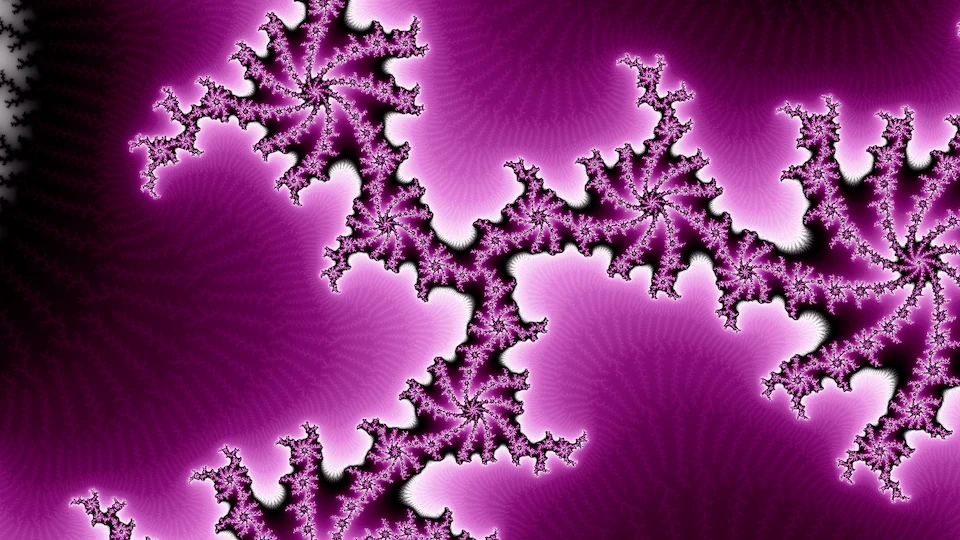
Julia set, zoomedwidth 5.5 × 10⁻¹⁶
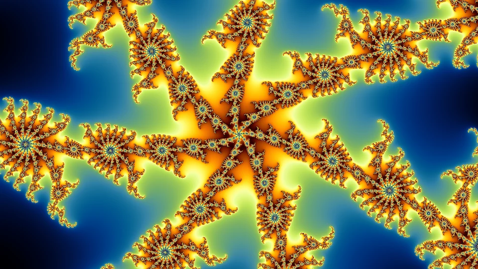
Parameter planewidth 5.2 × 10⁻¹⁶
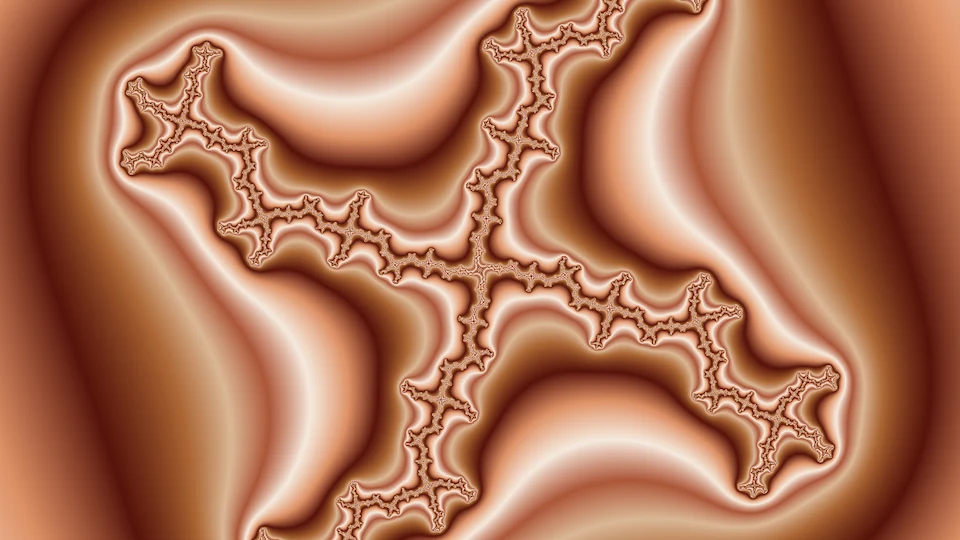
Julia setc = 0.3261 + 1.1187i, degree 4
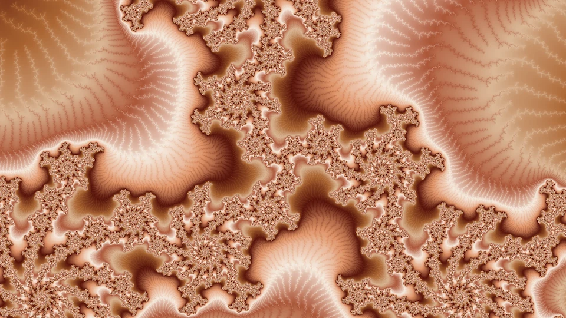
Julia set, zoomedwidth 4.2 × 10⁻¹⁶
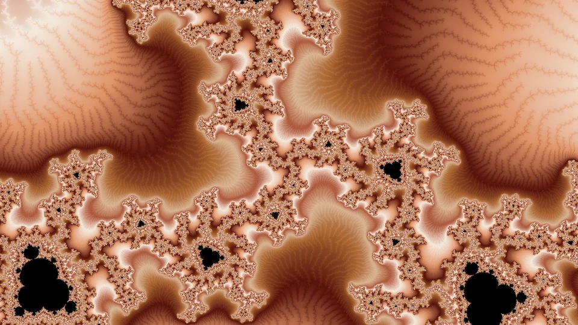
Parameter planewidth 2 × 10⁻¹⁶
The left column answers the question from the other side. At a deep parameter, the whole Julia set is a thin, plain branching curve, hard to tell apart from its neighbors' (at a Misiurewicz point it has no interior at all). What is particular to that parameter is packed into a region about as small as the zoom that found it. So a deep Julia zoom pays off at one place, the parameter's own point, and what it finds there is the Mandelbrot set's picture of the same place. The fractal explorer's Julia preview shows the Julia set for the parameter under the pointer.
How a deep frame is computed
The deep tab in the fractal explorer computes one orbit at high precision, the reference orbit, for the center of the frame, using fixed-point arithmetic with as many bits as the frame's width requires. Every pixel then iterates only its small offset from that orbit. Write a pixel's orbit as zn = Zn + δn, where Zn is the reference orbit, and let Δc be the pixel's offset in parameter. For z ↦ z2 + c the offset then obeys
δn+1 = (2Zn + δn)δn + Δc
and the higher degrees follow from the binomial expansion in the same way. The offsets are tiny, but a double keeps its relative precision at any magnitude, so δ fits comfortably in an ordinary double even where the coordinates themselves do not. This is perturbation, and it is how every modern deep-zoom renderer works.
The reference orbit is only a good anchor while a pixel's orbit stays near it. When the full value Zn + δn passes closer to zero than δn itself, the offset has become the larger quantity and precision starts to drain away. The fix used here is rebasing, due to Zhuoran on fractalforums.org. At that step the pixel takes its whole current value as a new offset and restarts from the beginning of the same reference orbit. With rebasing, one reference orbit serves the entire frame. The fractal explorer draws the multibrot families up to degree six, on both the parameter and dynamical planes, using the smooth rendering mode. Its iteration cap follows the same depth rule as the rest of the engine, up to a ceiling of a million, and a probe raises it when too many samples reach it. In practice it works down to widths of about 10−30 close to a minibrot, where the ceiling on iterations runs out. Renderers that also extend the exponent range of their offsets go hundreds of decades deeper.
Deep zoom rendering speed
The fractal explorer renders deep frames on the CPU, in WebAssembly, across the browser's worker threads. On one six-core desktop, the video's final frame takes about 15 seconds at 1280 by 720 with one sample per pixel, averaging about fifteen thousand iterations a sample. On the same machine, Fraktaler 3, a mature open-source deep-zoom renderer, takes about 50 seconds on the CPU with its acceleration on and about 100 without it. Compared like for like (CPU, doubles, plain perturbation), the fractal explorer does about seven times as many iterations per second. The likely reason is specialization rather than a better algorithm: Fraktaler 3 interprets general formulas and tracks derivatives at every step, while this kernel runs one fixed update. The two agree on more than 99.7% of pixels.
GPUs are clearly faster at this kind of independent per-pixel work. On the same machine Fraktaler 3's GPU path draws the frame in under 3 seconds, in single precision. Consumer GPUs are slow at doubles, and in double precision the same GPU roughly ties the fractal explorer's CPU kernel, which is why the fast GPU renderers work in single precision with extended-exponent tricks. This project kept rendering on the CPU for portability, and used the GPU only to evaluate its neural networks.
Deep-zoom renderers usually add bilinear approximation, which skips many iterations at once by applying a precomputed linear map. The fractal explorer does not use it, and the reason is worth knowing for anyone building one. On frames with visible structure it ranged from about 20% slower than plain perturbation to about 2.6 times faster. At every tolerance tried it also moved escape counts, and on some frames it moved the boundary of the interior, so the pictures stopped matching what the engine draws. It paid off handsomely only on frames that were almost entirely interior. Fraktaler 3 shows the same pattern on the video's final frame: its approximation buys a factor of about 1.3 to 2 and moves a fifth of the pixels by more than one iteration.
Automatic minibrot descents
Descents like the one in the video can be automated. The neighborhood of a minibrot is a small, turned copy of the whole set, so every place in the set has a twin inside every minibrot, smaller and slightly distorted. Start from a frame centered on a minibrot, and the descent can continue to the twin of any other frame centered on a minibrot, then to a twin inside that twin's own minibrot, nested until the iteration cap runs out, since the periods multiply at every step. With two frames A and B, each centered on a minibrot, there are four two-step descents: A then A, A then B, B then A, and B then B. The figure below shows A and B, and then all four. Each twin appears turned, because the copy it sits in is turned.
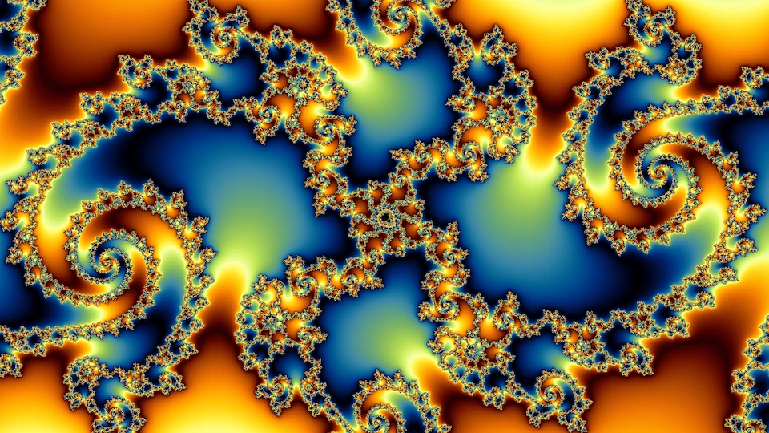
Aperiod 28, width 4.2 × 10⁻⁶
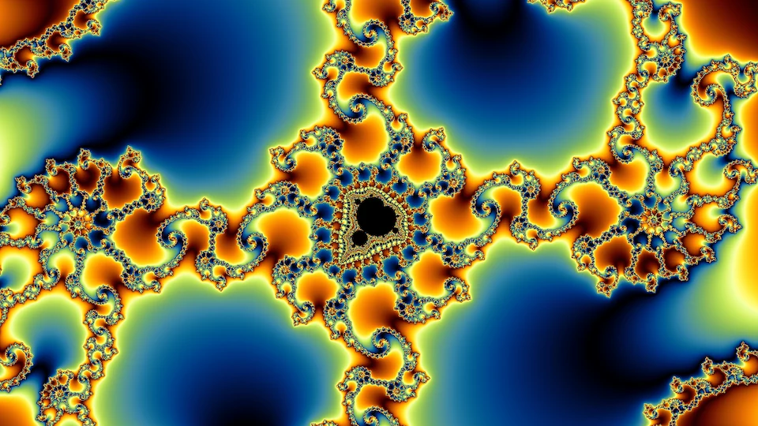
Bperiod 18, width 1.4 × 10⁻⁴
Figure placeholderdeep-descent-video
The multibrots
Figure placeholderdeep-multibrots
The deep gallery
The Deep tab of the fractal explorer carries a small gallery of deep frames.
Every figure on this page links to its frame in the explorer, the deep ones in the Deep tab, and the tab's links carry the frame and its coloring.